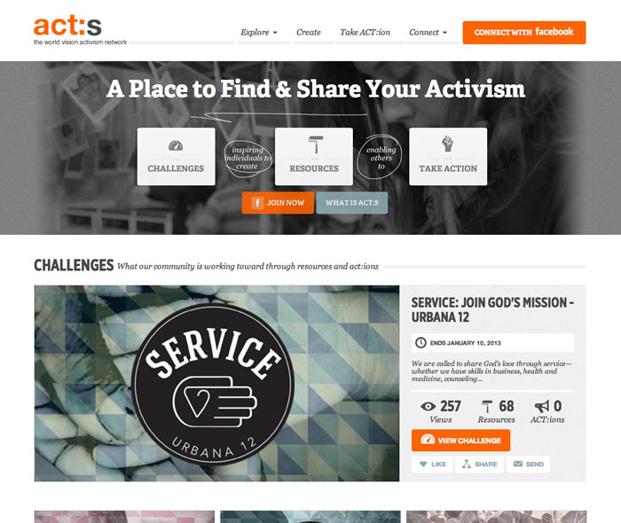

World Vision ACT:S url
2012


World Vision ACT:S is a social activism website. It was built by the team at Fifty & Fifty.
Fifty & Fifty hired me to take over lead development on the site. Traffic was increasing and the site was struggling to stay online. I solved those problems first and then went on to add additional features and maintain the site.
Technologies include:
- Ruby on Rails
- Heroku
- MongoDB
- Redis
- Resque